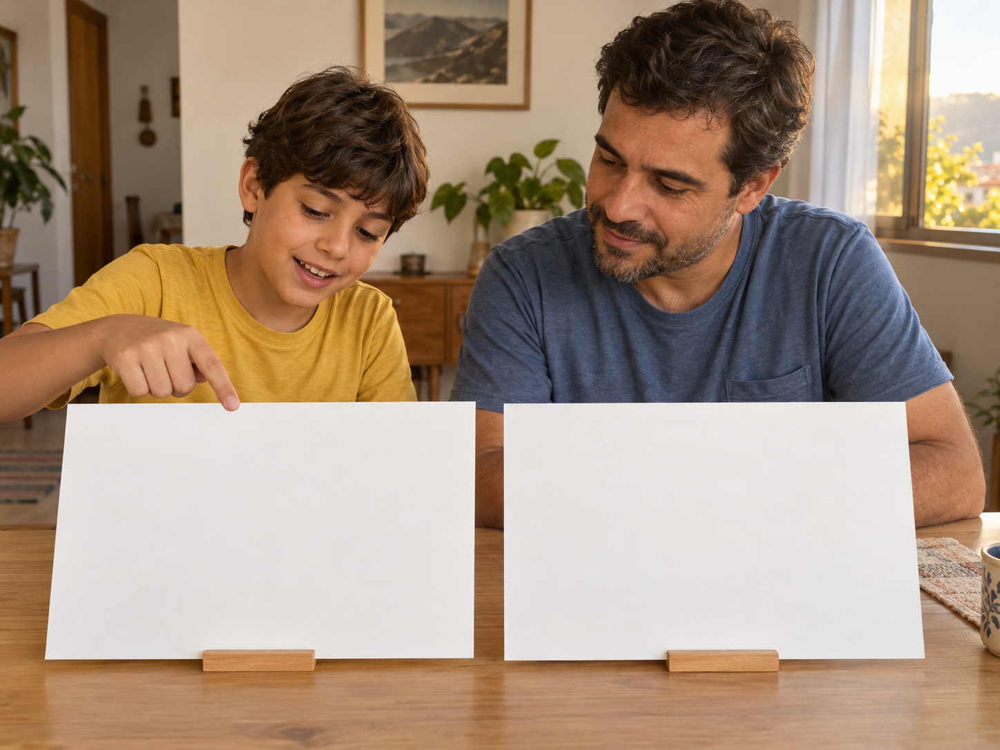
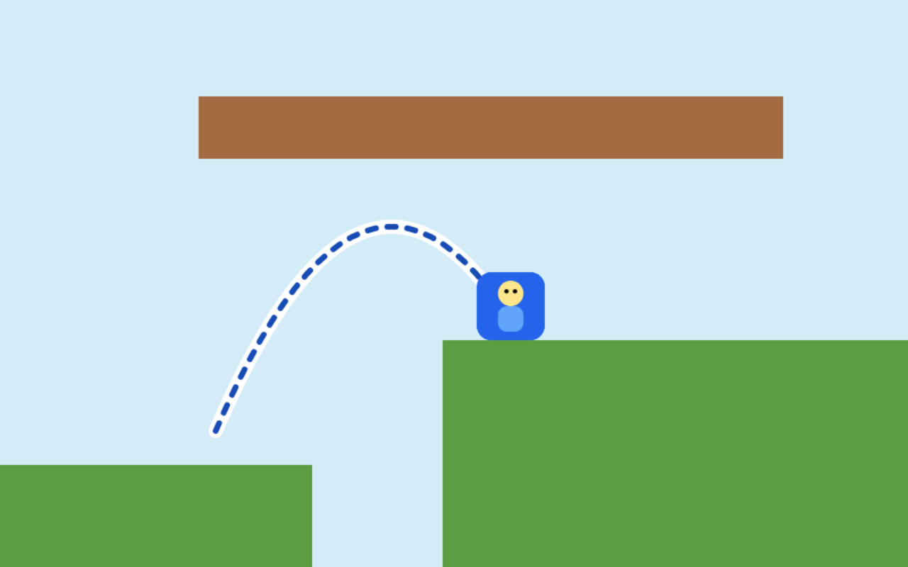
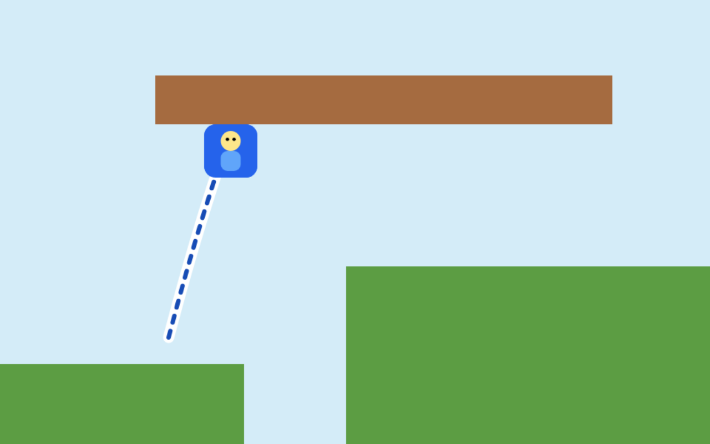

TRADUÇÃO DE CRIANÇA
‘Gostei mais desse.’
Peça para seu filho mostrar o que fez ele escolher.



Alcança a plataforma
Bate no teto
Peça para seu filho mostrar o que fez ele escolher.



Alcança a plataforma
Bate no teto